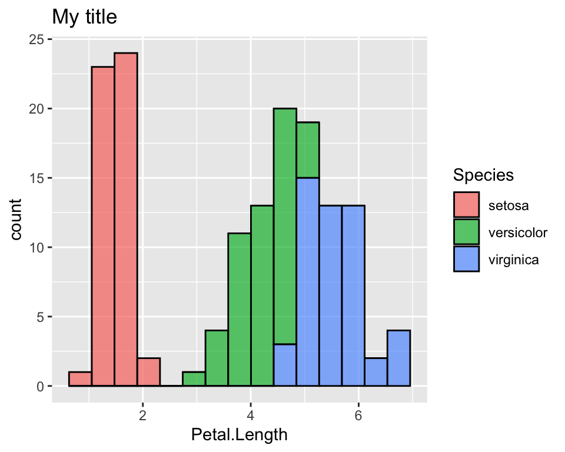
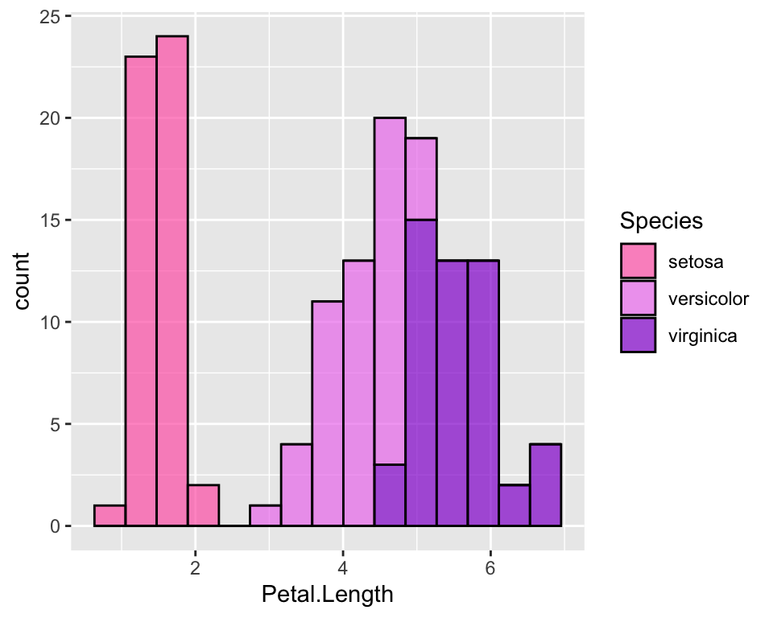
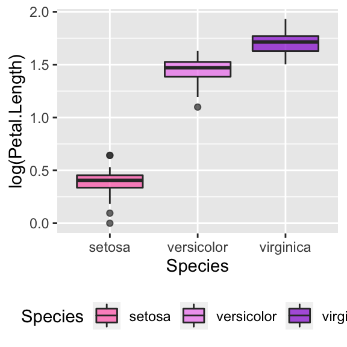
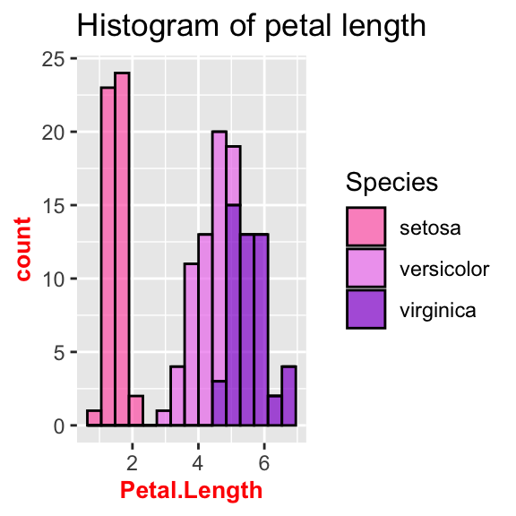
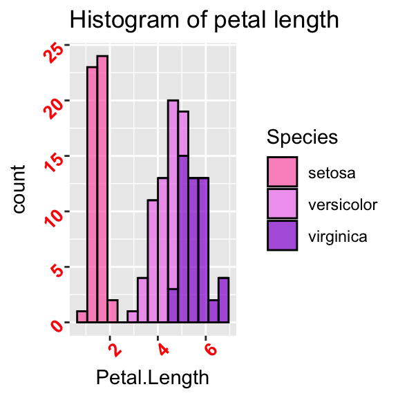

Annoying things to do with ggplot2
After learning the basic syntax, there is a number of things that are bit tricky (and often annoying!) to do with ggplot2. By “tricky” I just mean a number of things to customise which can make your plots look much nicer, but are easy to forget! This post is a collection of ggplot customisation that I often do and that I often forget how to do, hoping it can serve as a reference to others as well as to myself.
All throughout the post I will work with the well known iris dataset:
require(ggplot2)
require(dplyr)
data(iris)Add title
There are different ways to add a title in ggplot2. One way is that of using labs() function and specify the title there:
ggplot(data = iris, aes(x = Petal.Length, fill = Species)) +
geom_histogram(col = "black", alpha = 0.7, bins = 15) +
labs(title = "My title")
Change colours
One of the first things I wanted to change in ggplot was the default colours. Suppose for example we want to colour the histogram of Petal.Length according to the species, just like we did above:
ggplot(data = iris, aes(x = Petal.Length, fill = Species)) +
geom_histogram(col = "black", alpha = 0.7, bins = 15) There are different ways to do it. Here we see two ways of doing it, one using the color brewer palettes given by R and one way of doing it manually. To see more details on this, among the many websites that discuss this topic, I like this one.
First, note that we are working on the fill aesthetics, we will refer to the scale_fill_* functions. If the colour we want to customise is given in the col aesthetics or in th alpha aesthetics for example, we will use the scale_colour_* and scale_alpha_* functions respectively.
Use RColorBrewer palettes
If we want to use a colour palette as provided by the RColorBrewer package, the ggplot function that allows us to it is:
ggplot(data = iris, aes(x = Petal.Length, fill = Species)) +
geom_histogram(col = "black", alpha = 0.7, bins = 15) +
scale_fill_brewer(palette = "Greens")Given the factor order, it will assign the lightest colour to the first one and the darkest to the last one. If we want to change it, we may just use the direction parameter:
ggplot(data = iris, aes(x = Petal.Length, fill = Species)) +
geom_histogram(col = "black", alpha = 0.7, bins = 15) +
scale_fill_brewer(palette = "Greens", direction = -1)Palettes of gray can be used with the function scale_fill_gray().
Manually change colours
In order to manually change colours we will use scale_fill_manual() function. There are different ways to specify colours in R, such as using their name, their number, their rgb or their hex code.
ggplot(data = iris, aes(x = Petal.Length, fill = Species)) +
geom_histogram(col = "black", alpha = 0.7, bins = 15) +
scale_fill_manual(values = c("hotpink", "violet", "darkviolet"))
Change the default order of categories
If you do not like the default order of the categories (here it is the alphadetical order so setosa, versicolor and virginica), you need to order the factor the way you like and then use ggplot on it. Alternatively you can specify levels in the ggplot function itself:
ggplot(data = iris, aes(x = Petal.Length, fill = factor(Species, levels = c("virginica", "versicolor", "setosa")))) +
geom_histogram(col = "black", alpha = 0.7, bins = 15) +
scale_fill_manual(values = c("hotpink", "violet", "darkviolet"))Modify axis
To modify axis title, we use the labs() function, while in order to modify axis ticks, we use specific arguments in the theme() function:
# Change axis title
ggplot(data = iris, aes(y = Petal.Length, x = 0)) +
geom_boxplot(alpha = 0.7, fill = "hotpink") +
labs(x = "", y = "Petal length")
# Hide axis text
ggplot(data = iris, aes(y = Petal.Length, x = 0)) +
geom_boxplot(alpha = 0.7, fill = "hotpink") +
theme(axis.text.x = element_blank(),
axis.text.y = element_blank())
# Hide axis ticks
ggplot(data = iris, aes(y = Petal.Length, x = 0)) +
geom_boxplot(alpha = 0.7, fill = "hotpink") +
theme(axis.text.x = element_blank(),
axis.text.y = element_blank(),
axis.ticks.y = element_blank(),
axis.ticks.x = element_blank())
Customise legend
You can change the legend name, move it into a different place (for example at the bottom) or hide it:
# Change legend name
ggplot(data = iris, aes(y = log(Petal.Length), x = Species, fill = Species)) +
geom_boxplot(alpha = 0.7) +
scale_fill_manual(values = c("hotpink", "violet", "darkviolet"), name = "")
# Change legend position
ggplot(data = iris, aes(y = log(Petal.Length), x = Species, fill = Species)) +
geom_boxplot(alpha = 0.7) +
scale_fill_manual(values = c("hotpink", "violet", "darkviolet")) +
theme(legend.position = "bottom")
# Hide legend
ggplot(data = iris, aes(y = log(Petal.Length), x = Species, fill = Species)) +
geom_boxplot(alpha = 0.7) +
scale_fill_manual(values = c("hotpink", "violet", "darkviolet")) +
theme(legend.position = "")
Customise font in legend, axis and title
All these customisations can easily be done with the theme() function, which allows to customize the non-data components of plots. Let us start with legend and title:
# Change legend's title font and size
ggplot(data = iris, aes(x = Petal.Length, fill = Species)) +
geom_histogram(col = "black", alpha = 0.7, bins = 15) +
scale_fill_manual(values = c("hotpink", "violet", "darkviolet")) +
theme(legend.title = element_text(size = 20, face = "italic", colour = "red"))
# Change legend's categories font and size
ggplot(data = iris, aes(x = Petal.Length, fill = Species)) +
geom_histogram(col = "black", alpha = 0.7, bins = 15) +
scale_fill_manual(values = c("hotpink", "violet", "darkviolet")) +
theme(legend.text = element_text(size = 20, face = "italic", colour = "red"))
# Change title's font and size
ggplot(data = iris, aes(x = Petal.Length, fill = Species)) +
geom_histogram(col = "black", alpha = 0.7, bins = 15) +
labs(title = "Histogram of petal length") +
scale_fill_manual(values = c("hotpink", "violet", "darkviolet")) +
theme(plot.title = element_text(size = 10, face = "bold", colour = "red"))

Similarly, axis names and labels can be customised:
# Change axis's title font and size
ggplot(data = iris, aes(x = Petal.Length, fill = Species)) +
geom_histogram(col = "black", alpha = 0.7, bins = 15) +
labs(title = "Histogram of petal length") +
scale_fill_manual(values = c("hotpink", "violet", "darkviolet")) +
theme(axis.title = element_text(size = 10, face = "bold", colour = "red"))
# use axis.title.x and axis.title.y to change axis separately
# Change all titles at once
ggplot(data = iris, aes(x = Petal.Length, fill = Species)) +
geom_histogram(col = "black", alpha = 0.7, bins = 15) +
labs(title = "Histogram of petal length") +
scale_fill_manual(values = c("hotpink", "violet", "darkviolet")) +
theme(title = element_text(size = 10, face = "bold", colour = "red"))
# Rotate axis's labels, change font and size
ggplot(data = iris, aes(x = Petal.Length, fill = Species)) +
geom_histogram(col = "black", alpha = 0.7, bins = 15) +
labs(title = "Histogram of petal length") +
scale_fill_manual(values = c("hotpink", "violet", "darkviolet")) +
theme(axis.text = element_text(size = 10, face = "bold", colour = "red", angle = 45))
# use axis.text.x and axis.text.y to change axis separately
Barplots
Here are some issues I often encounter when I work with barplots.
Barplot with given bar length
Often we have a table with proportions or with aggregate data already on it. Hence we do not want the barplot to count and aggrgate the data but we just want it to plot as it is. In order to get this, we need to adjust the stat parameter. As default it is set to stat = "count", but what we want in this case is actually “identity”:
iris_aggr <- iris %>%
group_by(Species) %>%
summarise(prop = round(n()/nrow(iris), 3))
ggplot(iris_aggr, aes(x = Species, y = prop, fill = Species)) +
geom_bar(stat = "identity", alpha = 0.7)Pie chart
The pie chart is not one of the available functions in ggplot. Hence in order to get one we need to work a bit on the plot. It is basically a barplot, but we need to “reshape” it. First we build a barplot and then we will tweak it to make it circular:
# Use the width = 1 to make it occupy the whole plot
bplot <- ggplot(iris_aggr, aes(x = "", y = prop, fill = Species)) +
geom_bar(stat = "identity", width = 1) +
scale_fill_manual(values = c("hotpink", "violet", "darkviolet"))
# Reshape coordinates to make it round and get rid of axis ticks and labels
bplot +
coord_polar("y", start=0) +
labs(x = "", y = "") +
theme(axis.text.x=element_blank())Conclusion
In this article I collected a number of customisation to do with ggplot2 that I often have to do when I create a plot and I never remember how to do. It is just some customisations, but I may add more as I find some other useful, but boring and hard to remember!, things to customise in ggplot2.
My advice is that, when you are doing lots of customisation and it is always the same customisation, it may be more useful to create your theme so that you don’t always have to specify all the little options.
This article was written by Emanuela Furfaro.